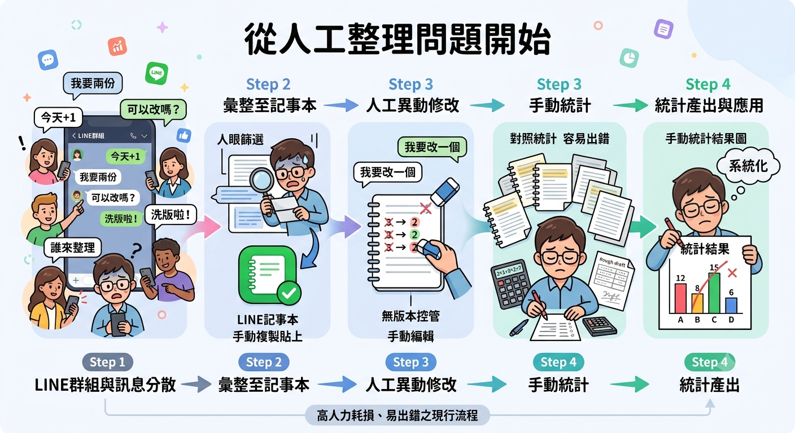
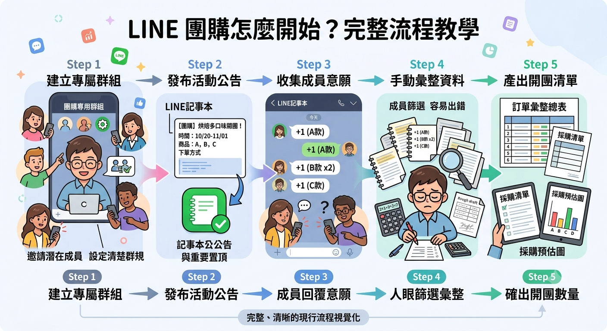
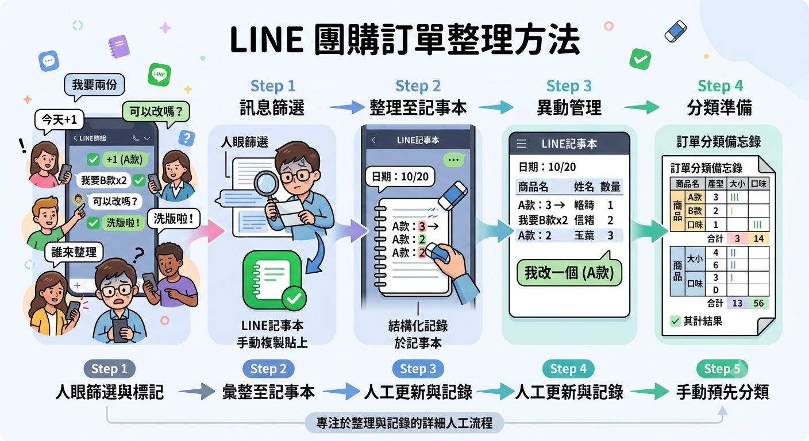
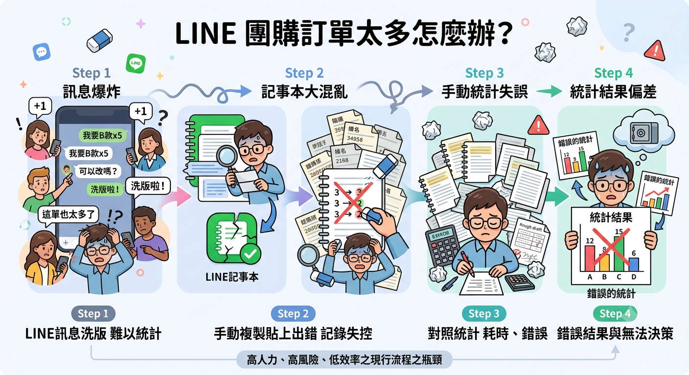
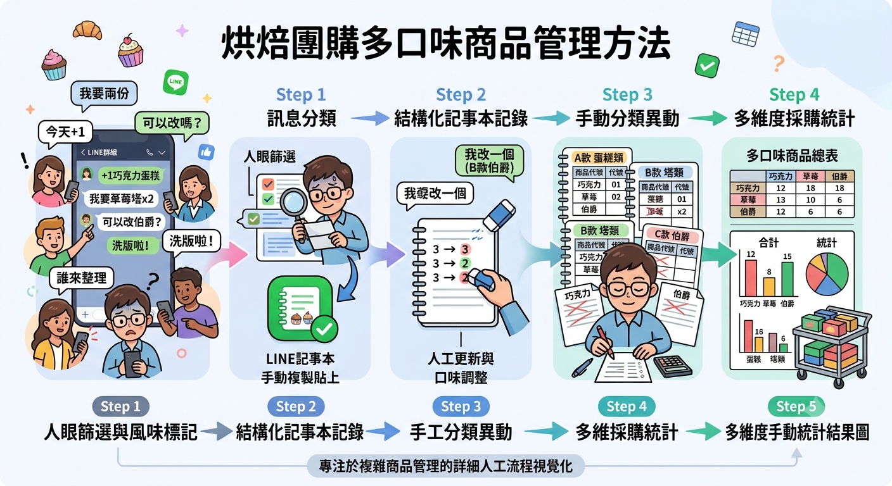
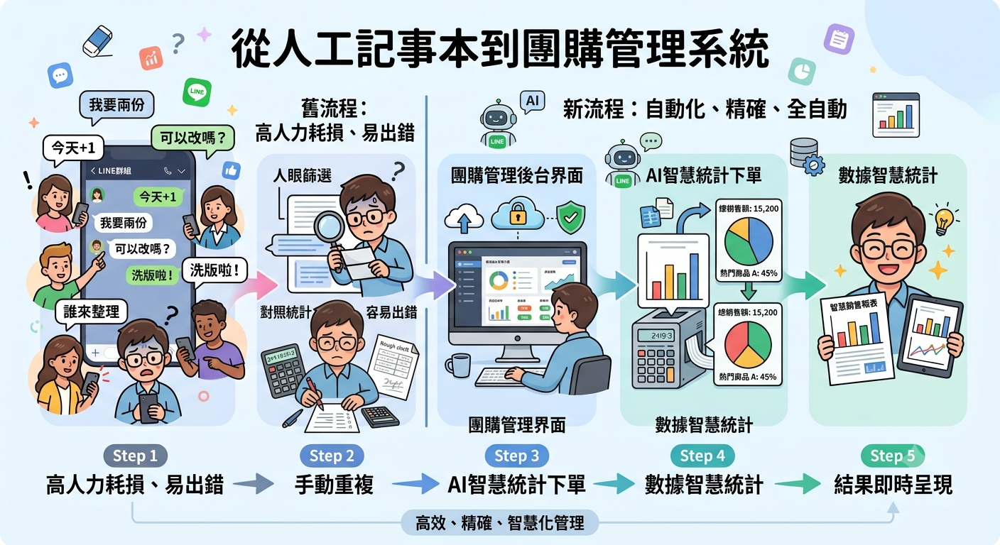

分享 LINE 團購、甜點經營與訂單管理技巧
許多團購經營者初期會使用 LINE 群組與記事本管理訂單， 但隨著商品種類與訂購人數增加，人工整理逐漸成為營運負擔。 本文分享開發 LINE 團購管理系統的原因， 以及如何透過系統改善傳統團購流程。

許多小型團購與烘焙工作室在開始經營時， 通常會選擇使用 LINE 作為主要訂購工具。
LINE 具有使用方便、客戶普及率高的優點， 不需要額外下載新的應用程式， 就能快速完成商品資訊分享與訂單收集。
當初期訂單數量較少時， 透過人工方式管理是可行的。
隨著團購次數增加， 商品種類、客戶數量與訂單內容也逐漸變得複雜。
原本簡單的 LINE 留言接單方式， 開始產生以下問題：
為了改善訊息分散問題， 許多團購經營者會改使用 LINE 記事本整理訂單。
LINE 記事本確實比聊天訊息更容易查看， 但仍屬於人工管理方式。
當訂單增加後， 管理者仍需要花費大量時間進行：
因此，希望透過系統化方式， 將原本分散在 LINE 訊息、記事本與人工計算中的流程整合。
系統的設計理念不是取代 LINE， 而是延伸 LINE 在團購經營上的不足。
解決傳統團購中商品資訊分散的問題。 管理者可以建立商品、口味與價格， 讓商品資料更加清楚。
將原本散落在 LINE 訊息中的訂單， 集中保存於系統中。
透過訂單資料整理， 協助管理者快速了解商品銷售狀況。
導入系統後， 原本需要人工處理的流程可以更加簡化。
開發 LINE 團購管理系統的目的， 是希望協助團購經營者降低重複整理工作， 將更多時間投入商品製作與客戶服務。
透過將團購流程數位化， 讓小型團購與烘焙工作室也能使用更有效率的管理方式， 逐步建立穩定的營運流程。
LINE 是許多人開始團購經營時的重要工具， 但當規模逐漸成長後， 管理方式也需要跟著提升。
從 LINE 群組接單、 LINE 記事本整理， 到團購管理系統導入， 這不只是工具的改變， 而是讓團購流程更加清楚、有效率的改善。
LINE 是許多小型團購與烘焙工作室常用的銷售工具， 透過群組即可快速與客戶溝通與接收訂單。 本文介紹 LINE 團購完整流程，從建立群組、商品介紹、 客戶下單到訂單管理，協助初次經營團購者建立基本流程。

開始團購前，首先需要建立一個 LINE 群組， 作為商品資訊發布與客戶溝通的主要管道。
團購群組通常可以用於：
對於剛開始經營團購的商家來說， LINE 群組具有操作簡單、客戶容易使用的優點。
在開放訂購前，需要先整理完整的商品資訊， 讓客戶可以清楚了解販售內容。
常見商品資訊包含：
清楚的商品資訊可以降低客戶詢問次數， 也能減少後續整理訂單時的混亂。
傳統 LINE 團購最常見的方式， 是讓客戶直接在群組中留言提供訂購內容。
這種方式適合初期訂單量較少的團購， 客戶不需要額外學習新的操作方式， 即可完成訂購。
當客戶開始留言後， 管理者需要將訂購內容整理保存。
初期常見整理方式：
例如：
當訂單數量增加後， 單純依靠人工整理會需要花費更多時間。
團購截止後，需要統計所有訂單， 確認實際製作數量。
正確統計商品數量， 對烘焙工作室尤其重要， 因為會直接影響食材準備與製作安排。
LINE 適合快速開始團購， 但當訂單規模增加後， 可能會遇到以下問題：
當團購頻率增加或商品種類變多時， 可以將原本人工處理流程轉換為系統管理。
LINE 團購適合以下類型的經營者：
LINE 是開始團購經營時非常方便的工具， 可以快速建立與客戶之間的溝通管道。
不過，隨著訂單數量與商品種類增加， 管理方式也需要逐步改善。 從 LINE 群組接單，到使用訂單管理系統， 可以讓團購流程更加穩定，也降低人工整理負擔。
LINE 團購初期可以透過群組快速接收訂單， 但隨著訂單數量增加，容易遇到訊息分散、人工統計困難等問題。 本文整理常見訂單整理方式，以及如何逐步改善團購管理流程。

許多小型團購或烘焙工作室在初期會使用 LINE 群組作為主要接單方式。 客戶只需要在群組中留言，即可完成訂購，不需要額外學習新的操作方式。
例如：
這種方式適合訂單數量較少的情況， 但當團購人數增加後，訂單容易被後續聊天訊息覆蓋， 管理者需要花費更多時間重新搜尋與整理。
為了解決 LINE 群組訊息分散的問題， 許多團購經營者會改用 LINE 記事本集中記錄訂單內容。
例如整理成：
LINE 記事本比直接搜尋聊天紀錄更加方便， 可以快速查看目前訂購內容。
不過，記事本仍然屬於人工管理方式， 當客戶修改訂單或增加商品時， 管理者仍需要手動更新資料。
當團購規模逐漸增加，人工整理通常會遇到以下問題：
部分團購經營者會將訂單轉移至 Excel， 利用表格方式管理客戶、商品與數量。
Excel 可以協助計算數量， 但仍需要人工輸入訂單資料。 當商品種類與訂單增加時，維護成本也會提高。
當團購訂單達到一定規模後， 可以將原本人工整理流程改為系統化管理。
不同團購規模適合不同管理方式：
如果每天需要花費大量時間整理訂單， 或經常遇到數量統計錯誤， 就代表目前的管理方式可能需要升級。
LINE 是方便快速的團購工具， 適合初期建立客戶關係與收集訂單。 但隨著商品種類與訂單數量增加， 單純依靠聊天訊息或記事本管理， 會逐漸產生整理上的負擔。
透過適合的訂單管理方式， 可以降低人工整理時間， 讓團購流程更加穩定且有效率。
LINE 團購初期使用群組留言即可快速完成接單， 但當訂單數量增加後，容易遇到訊息混亂、訂單遺漏、 商品數量統計困難等問題。本文介紹團購規模增加後， 如何改善訂單管理流程。

LINE 是許多團購經營者最常使用的工具， 因為客戶不需要額外下載 App，也能快速透過留言完成訂購。
但是當團購人數增加後， 原本簡單的留言接單方式會逐漸產生管理問題。
當團購規模擴大後，管理者通常會遇到以下問題：
當訂單開始增加時， 許多團購經營者會改用 LINE 記事本整理訂單。
例如：
LINE 記事本確實能改善訊息分散問題， 但仍然需要人工維護。
當訂單數量更多時， 管理者仍需要花費時間：
要改善團購管理流程， 可以從以下幾個方向開始：
要求客戶依照固定格式留言， 例如：
可以降低人工整理難度， 但仍需要後續人工統計。
將訂單整理至 Excel 或 Google Sheet， 方便查看商品數量。
適合中小型團購， 但訂單增加後仍需要人工輸入。
當團購頻率提高或商品種類增加時， 可以將訂購流程系統化。
並不是所有團購都需要系統， 可以依照目前遇到的問題判斷。
導入團購管理系統後， 可以將原本分散的訂單資訊集中管理。
管理者可以更快速查看目前訂單狀況， 並依照商品銷售結果安排製作與備料。
LINE 是非常適合開始團購的工具， 但當訂單量逐漸增加時， 管理方式也需要同步調整。
從人工整理、LINE 記事本， 到導入團購管理系統， 是許多團購經營者在成長過程中會遇到的管理轉變。
找到適合目前規模的管理方式， 才能降低整理成本， 讓團購流程更加穩定。
了解 LINE 團購管理系統如何改善訂單流程烘焙團購常有不同口味、規格與價格組合， 當訂單增加後，單靠 LINE 訊息整理容易造成統計困難。 本文介紹多口味商品的管理方式，以及如何建立更有效率的團購流程。

與一般商品不同，烘焙類團購通常會有較多變化， 例如不同口味、尺寸、包裝方式或優惠組合。
例如同一款蛋糕可能包含：
當商品選項增加後， 管理者需要處理更多訂購組合， 也提高人工整理的難度。
在傳統 LINE 團購中， 客戶通常會使用文字留言方式訂購。
這類自由格式留言雖然方便客戶， 但管理者後續需要人工判斷：
當訂單數量增加時， 容易發生以下情況：
管理多口味商品時， 建議將商品資訊拆分管理。
透過清楚分類， 可以讓管理者更容易掌握每個商品選項的銷售狀況。
當團購結束後， 管理者通常需要重新整理所有訂單。
如果訂單數量增加， 這個流程可能需要花費大量時間， 同時也增加人工計算錯誤的機率。
透過團購管理系統， 可以將商品資訊提前建立， 讓客戶下單時直接選擇商品與口味。
客戶完成選擇後， 系統可以直接保存訂購內容， 管理者不需要再從聊天紀錄中重新確認。
管理者可以快速確認：
這些資訊也能協助烘焙工作室提前安排：
如果目前遇到以下情況， 就代表商品管理方式可能需要改善：
烘焙團購最大的特色就是商品變化多， 從單一商品發展到多口味、多規格後， 管理方式也需要同步提升。
透過清楚的商品分類與訂單管理流程， 可以降低人工整理負擔， 讓團購經營者更專注於商品製作與服務品質。
許多小型團購初期會使用 LINE 群組與記事本管理訂單， 但隨著商品種類與訂購人數增加，人工整理逐漸變得困難。 本案例分享如何將傳統 LINE 團購流程導入系統管理， 提升訂單整理與商品統計效率。

在團購開始階段，使用 LINE 群組接收訂單是一種快速且方便的方式。 客戶可以直接留言商品、口味與數量， 管理者也能立即看到訂購需求。
但隨著團購次數增加，以及商品種類變多後， 原本簡單的留言方式逐漸產生管理上的問題。
傳統團購通常會經歷以下流程：
為了方便管理， 許多團購經營者會將訂單從聊天訊息整理到 LINE 記事本。
雖然記事本比聊天紀錄更容易查看， 但仍需要人工維護資料。
當訂單數量增加後， 管理者會遇到以下問題：
為改善人工整理問題， 將原本分散的團購流程整合至管理系統。
客戶仍然可以透過熟悉的 LINE 使用服務， 管理者則能透過後台查看完整訂單資料。
管理者可以建立不同商品， 並設定商品名稱、口味與價格。
避免過去需要從文字訊息中判斷商品內容。
所有客戶訂購資料集中保存， 管理者可以快速查看目前團購訂單。
當客戶需要修改內容時， 也能直接更新訂單資料。
系統將訂單資料整理成統計資訊， 協助管理者了解商品銷售狀況。
可作為後續備料與製作安排的參考。
導入系統後，團購管理流程可以獲得以下改善：
以下類型的經營者，可以考慮導入系統：
LINE 是團購經營很好的開始， 但當訂單量與商品種類增加後， 管理方式也需要同步提升。
從 LINE 群組接單、 LINE 記事本整理， 到導入團購管理系統， 不只是工具改變， 而是讓整個團購流程更加穩定與有效率。